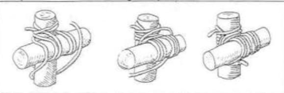
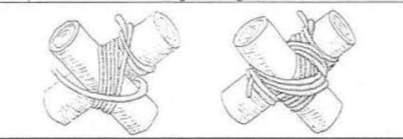
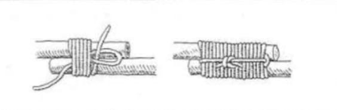

Legatura quadra
Cos è? La legatura quadra è il "mattone" fondamentale delle
costruzioni scout. A cosa serve concretamente? La sua funzione
principale è trasferire il carico. Serve a impedire che un palo
orizzontale scivoli lungo un palo verticale quando viene sottoposto
a una pressione dall'alto verso il basso. Serve anche a mantenere
l'angolo di 90° tra i due legni, impedendo che la struttura
"imbarchi" o si storca. Quando viene utilizzata? In campo scout, la
usi ogni volta che i pali si incrociano a forma di "+" (croce). Ecco
le situazioni tipiche: 1. Nelle sopraelevate (Pioneering): La usi
per fissare i longheroni (i pali orizzontali portanti) ai pali
verticali che sostengono la piattaforma dove dormirai. Se la
legatura quadra è lenta, il tavolo o il letto inizieranno a
inclinarsi pericolosamente. 2. Nei portali d'ingresso: Si usa per
fissare l'architrave (il palo in alto con il nome della pattuglia)
ai montanti. Deve resistere non solo al peso del legno, ma anche
alle sollecitazioni del vento. 3. Per l'allestimento dell'angolo di
squadriglia: Ad esempio per costruire tavoli e panche, cucina e
lavabo. 4. Nelle torri e nelle altane: In questo caso è vitale,
serve a fissare i pioli delle scale o i parapetti di sicurezza.
Ricordati di NON confonderla con la legatura diagonale. Usa la
Quadra se i pali si toccano naturalmente restando a 90° (devono
formare una croce dritta). Usa la Diagonale se i pali tendono a
stare distanti tra loro o se l'incrocio è a forma di "X" (angoli
diversi da 90°), perché la diagonale serve a "tirarli" uno verso
l'altro. Un piccolo trucco per la sicurezza: quando finisci una
legatura quadra, prova a dare un colpo secco al palo orizzontale; se
senti un rumore cupo o vedi che si muove anche solo di un
millimetro, significa che la strozzatura non è abbastanza stretta.
Meglio rifarla subito che trovarsi con il tavolo a terra durante la
cena. Com'è fatta? Per essere efficace, una legatura quadra segue
solitamente questo schema: inizio con un nodo paletto (parlato o del
boscaiolo) sul palo verticale, sotto l'incrocio; giri di tenuta
facendo passare la corda alternativamente sopra e sotto i pali;
strozzatura con 2 o 3 giri strettissimi fatti tra i due pali per
tendere la corda; fine con un nodo piano sul palo orizzontale per
bloccare il tutto.

Legatura diagonale
Cos'è? La legatura diagonale è una delle tecniche fondamentali della
pionieristica scout. A differenza della legatura quadra, che serve a
unire pali che si incrociano a 90°, la diagonale è progettata per
gestire situazioni più difficili. Ecco a cosa serve nello specifico:
1. Unire pali che non si toccano: la funzione principale della
legatura diagonale è quella di avvicinare e bloccare due pali che
tendono a stare distanti o che si incrociano con angoli diversi da
90° e, grazie alla sua struttura, permette di tirarli uno verso
l'altro con grande forza. 2. Stabilizzare strutture a "X" (Croci di
Sant'Andrea): è la legatura d'elezione per le diagonali di rinforzo
di ponti, torrette o telai. 3. Gestire la tensione: si inizia sempre
con un nodo paletto o un nodo d'ancora strozzato attorno a entrambi
i pali, proprio per esercitare subito trazione. I giri di corda
passano poi sopra e sotto gli angoli opposti, creando una struttura
a croce che distribuisce il carico in modo uniforme. Quando usarla e
quando no: usa la legatura diagonale se i pali formano una "X" o se
c'è uno spazio tra di loro che devi rafforzare forzatamente; usa la
legatura quadra se i pali sono già a contatto e formano un angolo
retto a "croce" o a "T". Un consiglio pratico: una legatura
diagonale è davvero efficace solo se la strozzatura finale è fatta
con estrema forza, perché è quella che mette in tensione tutto il
sistema. Come si fa? Nodo d'inizio: inizia con un nodo paletto o un
parlato attorno a entrambi i pali. Giri di fasciatura verticali: fai
3 o 4 giri completi passando negli angoli più ampi della "X". Cambio
di direzione: passa la corda dietro uno dei pali e inizia altri 3 o
4 giri negli altri due angoli. Strozzatura: fai 2 o 3 giri di corda
tra i due pali per schiacciare le fasciature precedenti. Nodo di
chiusura: chiudi con un nodo parlato su uno dei pali, possibilmente
quello dove non avevi iniziato.

Legatura di giunzione
Cos'è? La legatura di giunzione, spesso chiamata anche legatura di
prolunga, è il trucco magico dello scout quando la natura non
collabora: serve a unire due pali per ottenerne uno più lungo. È
fondamentale quando devi costruire una struttura alta, come il
pennone o le gambe di una torretta molto elevata, e non hai a
disposizione pali della lunghezza necessaria. A differenza delle
altre legature che creano angoli, questa deve rendere i due pali un
corpo unico e rigido. Ecco lo scopo principale: 1. Prolungare la
portata verticale o orizzontale di un elemento. 2. Stabilità: per
essere sicura, i due pali devono essere sovrapposti per una parte
della loro lunghezza (circa 1/4 o 1/5 della lunghezza totale del
palo). 3. Sicurezza: se la giunzione deve sopportare pesi elevati
(come il portale del campo), si usano sempre due legature di
giunzione distanziate tra loro per evitare che i pali facciano perno
e si pieghino. Ecco alcuni nostri consigli per una legatura
perfetta: i cunei. I cunei: poiché i pali non sono mai perfettamente
cilindrici, tra i due pali si inseriscono spesso dei piccoli cunei
di legno. Questi servono a creare tensione extra quando tiri la
corda. La strozzatura interna: a differenza della diagonale, qui la
strozzatura è vitale per stringere il morso della corda sui pali e
impedire che scivolino. Il verso dei pali: se possibile, cerca di
sovrapporre la parte più sottile di un palo con quella più doppia
dell'altro, per equilibrare lo spessore totale. Quando NON usarla:
non usare mai una legatura di giunzione per unire due pali che
devono subire una forte trazione laterale, a meno che la struttura
non sia supportata da altri rinforzi. In quel caso, il rischio che i
pali scivolino via l'uno dall'altro è alto. Come si fa? Per essere
efficace, una legatura di giunzione usa di solito questo schema: 1.
Preparazione e sovrapposizione: affianca i due pali in modo che si
sovrappongano per almeno 1/4 della loro lunghezza. Se i pali sono
molto diversi in diametro, metti la punta di uno contro il calcio
(parte doppia) dell'altro per bilanciare lo spessore. 2. Il nodo
d'inizio: fai un nodo paletto (o un nodo parlato) su uno dei due
pali, appena sopra il punto in cui inizia la sovrapposizione. Lascia
un po' di capo morto (lo spezzone di corda corto) per sicurezza. 3.
I giri di fasciatura (orizzontali): inizia ad avvolgere la corda
attorno a entrambi i pali. Fai circa 8-10 giri strettissimi, uno
accanto all'altro. 4. La strozzatura: questa è la parte che morde il
legno. Passa la corda in mezzo ai due pali, sopra i giri che hai
appena fatto. Fai 2 o 3 giri di strozzatura molto potenti. Questi
giri stringono la fasciatura esterna contro il legno, creando un
attrito enorme che impedisce lo scivolamento verticale. 5. Il nodo
di chiusura: concludi con un nodo piano sul palo opposto a quello
dove hai iniziato. Assicurati che sia ben stretto.